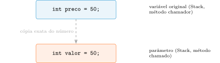

O Paradigma Orientado a Objetos e a Máquina Java
Aula 1 — Programação Orientada a Objetos
1 Proposta da Aula
Este curso não é sobre sintaxe. É sobre uma pergunta que toda base de código enfrenta mais cedo ou mais tarde: como escrever software que sobrevive à mudança? Software não é um evento estático — é um processo contínuo de adaptação, e a arte do design está em preservar a modificabilidade do código, não em fazê-lo funcionar uma única vez.
Um sistema mal projetado tem uma curva de custo de manutenção exponencial: cada nova funcionalidade fica mais cara que a anterior, porque o código já existente resiste à mudança. Sandi Metz resume o que se deve buscar num acrônimo — TRUE:
- Transparent — as consequências de uma mudança devem ser óbvias, tanto no lugar alterado quanto em qualquer outro lugar que dependa dele.
- Reasonable — o custo de qualquer mudança deve ser proporcional ao benefício que ela traz, não uma epopeia desproporcional.
- Usable — o código deve poder ser reaproveitado em contextos novos e inesperados, não apenas no que foi imaginado no dia em que foi escrito.
- Exemplary — o código deve encorajar quem o modifica a manter as mesmas qualidades, não degradá-las.
Três sintomas denunciam a ausência dessas qualidades: rigidez (uma mudança força uma cascata de mudanças em módulos dependentes), fragilidade (o software quebra em lugares sem conexão lógica com o que foi alterado) e imobilidade (o código não pode ser reaproveitado fora do contexto original, por causa de dependências). O design orientado a objetos não é luxo acadêmico — é a estratégia para manter esses três sintomas sob controle.
O roteiro desta aula, em quatro perguntas:
- O que muda, de fato, quando trocamos o paradigma procedural pelo orientado a objetos?
- O que faz de um pedaço de código “um objeto” — e por que ele precisa de uma membrana ao redor?
- Como a JVM executa esse código, e o que a diferencia de uma linguagem compilada tradicional?
- Onde exatamente um objeto vive na memória — e por que isso muda completamente o que acontece quando você passa um objeto para um método?
2 A Mudança de Paradigma
No paradigma procedural (C, Pascal), o programador atua quase como tradutor de hardware: pega um problema do mundo real e o traduz para estruturas de dados passivas, manipuladas por funções externas que trafegam livremente pelo sistema. O risco arquitetural é severo — qualquer parte do programa pode alterar dados globais de forma inadvertida, gerando efeitos colaterais que quebram o sistema longe de onde o erro se originou.
A Orientação a Objetos inverte essa lógica: o foco passa a ser o Espaço do Problema. Em vez de mapear a solução para inteiros e arrays puros, projetamos objetos que representam entidades do domínio — “Conta Corrente”, “Produto”, “Pedido”. Dados e comportamento deixam de ser elementos separados e passam a viver unidos numa única entidade coesa. O objeto deixa de ser um pedaço de memória passivo e passa a atuar como um colaborador autossuficiente.
Exemplo condutor: o desconto no e-commerce.
Na visão procedural, o preço é um número guardado na memória (float preco = 100.0). Uma função externa — a rotina de fechamento do carrinho — pega esse número, calcula o desconto e sobrescreve o valor. O risco: qualquer parte do sistema pode alterar a variável diretamente, ignorando regras de negócio (dar 90% de desconto por engano, por exemplo). E se a regra de negócio mudar — “produtos de Eletrônicos não podem ter desconto maior que 5%” — o if precisa ser inserido em cada lugar que manipula o preço; se amanhã surgir um app mobile que também aplica descontos, a regra precisa ser duplicada lá.
Na visão orientada a objetos, o Produto é o dono da sua própria informação. Você não calcula o desconto por fora; você diz ao produto “aplique 10% de desconto em si mesmo” — e o próprio objeto pode recusar o pedido se ele violar uma regra da loja. A regra de negócio existe em um único lugar: dentro do objeto que ela protege.
3 Estado, Comportamento, Identidade e Encapsulamento
Para existir plenamente como objeto, uma entidade precisa de três propriedades:
- Estado — os dados internos (atributos): o que o objeto sabe, naquele exato instante.
- Comportamento — as ações que pode realizar (métodos): o que o objeto faz diante de um estímulo.
- Identidade — a garantia da JVM de que cada instância é fisicamente única na memória, independentemente do seu estado (dois pacotes idênticos de arroz, mesmo preço, são bens distintos no estoque real).
Ter Estado e Comportamento não basta — é preciso protegê-los. É aqui que entra o encapsulamento: a membrana que separa o mundo interno do objeto do mundo externo. A analogia útil é a de um carro: o motorista opera o volante e os pedais (a interface), mas o motor (a implementação) fica fechado numa caixa preta. Trocar o motor a combustão por um elétrico não muda como se dirige, desde que a interface continue a mesma.
Esse conceito deriva do princípio de Ocultamento de Informação (Information Hiding): ocultar dados não é uma medida de segurança contra invasores, é uma medida de engenharia contra a fragilidade do próprio código. Se o mundo externo não conhece a estrutura interna de um objeto, ele não pode criar uma dependência física com ela — e o objeto pode mudar por dentro sem quebrar ninguém por fora.
O encapsulamento sustenta as outras três propriedades:
- Sustenta o Estado — cria invariantes (leis absolutas de negócio, como “um carrinho não pode ter valor total negativo”); o objeto é o único guardião de si mesmo.
- Sustenta o Comportamento — força o princípio Tell, Don’t Ask (“diga, não pergunte”): em vez de extrair dados de um objeto para decidir por fora, delega-se a decisão para dentro dele.
- Sustenta a Identidade — sem integridade de estado, a identidade lógica do objeto se corrompe (um objeto
ContaBancariasem nome de titular e com saldo negativo por erro de sistema é um “zumbi” no domínio, mesmo que sua identidade física na memória continue intacta).
Escreva sua resposta com suas próprias palavras e compare com um colega antes de avançar (2 min).
4 Classe vs. Objeto/Instância
A distinção entre Classe e Objeto costuma ser a mudança cognitiva mais difícil para quem vem do procedural. A classe é o contrato, a planta baixa: quando escrevemos Produto.java, apenas definimos que todo produto terá um nome e um preço, e saberá aplicar um desconto. Não é possível “vender” a classe — ela é só especificação.
O objeto (a instância) é a materialização dessa especificação. Quando o sistema executa new Produto("Smartphone", 2000.0), a JVM aloca um bloco físico na Heap, com identidade própria e valores concretos.
Um detalhe técnico que confunde muita gente: a classe não existe só no disco. Durante a execução, a própria classe é carregada na memória da JVM pelo ClassLoader — numa área chamada Method Area (ou Metaspace), separada da Heap onde vivem as instâncias. É lá que ficam o bytecode dos métodos e os membros static. Ou seja: a classe existe na memória para fornecer as instruções; as instâncias existem na Heap para guardar os dados individuais. Se um banco de dados retorna 500 clientes ativos, a JVM cria 500 instâncias distintas de Cliente na Heap, cada uma com seus próprios dados isolados — mas todas compartilhando o mesmo código executável, carregado uma única vez.
5 A Infraestrutura Java: JVM, Bytecode e JIT
A arquitetura do Java resolve um problema crônico de linguagens como C++: portabilidade. Em vez de compilar direto para código de máquina de uma arquitetura específica, o Java introduz uma camada de abstração — a JVM (Java Virtual Machine).
A compilação ocorre em duas etapas. Primeiro, o compilador estático (javac) transforma o código-fonte (.java) em Bytecode (.class) — instruções de baixo nível, otimizadas, mas independentes de plataforma. Segundo, em tempo de execução, a JVM lê esse bytecode e o mapeia para as instruções nativas do ambiente hospedeiro. É esse mecanismo que sustenta o lema Write Once, Run Anywhere (WORA): o mesmo .class roda em Windows, Linux ou Mac, desde que haja uma JVM compatível.
Uma crítica histórica ao Java é que interpretar bytecode seria lento demais. A resposta é o compilador JIT (Just-In-Time): a JVM faz profiling ativo do programa em execução, identifica os hotspots (métodos e laços chamados com altíssima frequência) e os traduz, ali mesmo, para código de máquina nativo — otimizado com base no comportamento real da aplicação e na CPU atual, algo que um compilador estático nunca poderia prever de antemão. Por isso, em aplicações servidoras de longa duração, o Java compete de igual para igual com linguagens compiladas estaticamente.
6 Memória: Stack, Heap e o Coletor de Lixo
É essencial separar a Stack (pilha de execução, onde vivem variáveis locais e parâmetros) da Heap (onde vivem os objetos). O fim do escopo de um método não destrói o objeto que ele instanciou — destrói só o ponteiro:
public void processarPedido() {
// 1. O objeto Pedido nasce fisicamente na Heap.
// A variável p1 (na Stack) guarda o endereço de memória.
Pedido p1 = new Pedido("Notebook", 4500.0);
enviarEmailConfirmacao(p1);
// 2. A variável local p1 é destruída ao fim do método.
// O objeto "Notebook" permanece na Heap, agora "órfão".
}O Garbage Collector (GC) não rastreia o lixo — ele rastreia o que está vivo. Parte de raízes seguras, as GC Roots (variáveis locais ativas numa thread, ou atributos static), e navega pelos ponteiros de memória a partir delas. Todo objeto alcançado a partir de uma raiz é “vivo”; se nenhum caminho a partir de nenhuma raiz alcança um objeto, ele é declarado inalcançável — só então se torna elegível para coleta.
Isso explica o paradoxo mais comum de vazamento em Java: o Java não tem memory leak clássico (ponteiro perdido), mas sofre de retenção obsoleta de objetos. Um Map static funciona como uma GC Root eterna:
public class MonitorDeVendas {
// A armadilha: um mapa estático atua como uma GC Root eterna
private static Map<Integer, Pedido> cacheInfinito = new HashMap<>();
public void registrar(Pedido p) {
cacheInfinito.put(p.getId(), p);
// Mesmo que a compra termine, o mapa continua
// segurando a referência do Pedido.
}
}Se cem mil pedidos são inseridos nesse cache sem uma política de limpeza, cada um continua alcançável — a lógica de negócio já terminou com eles, mas a JVM não pode saber disso. O resultado: Heap esgotada, OutOfMemoryError.
Por fim, o GC só cuida de memória. Arquivos, conexões de rede e de banco de dados consomem recursos escassos do sistema operacional, e esperar que o GC os libere é catastrófico — ele age em momento não-determinístico. A solução é o try-with-resources: qualquer classe que implemente AutoCloseable, declarada dentro do try, tem seu close() chamado automaticamente ao fim do bloco, com sucesso ou exceção:
public void gerarNotaFiscal(Pedido p) {
// O try-with-resources garante o fechamento determinístico
try (FileWriter escritor = new FileWriter("nf_" + p.getId() + ".txt")) {
escritor.write(p.dadosResumidos());
// A linguagem injeta um "finally" invisível que chama
// escritor.close(), devolvendo o recurso ao S.O.
} catch (IOException e) {
throw new UncheckedIOException("Falha na geração da NF", e);
}
}static nunca fica vazio sozinho, mesmo que os objetos que ele guarda não sirvam mais para nada. Por que o Garbage Collector se recusa a limpá-lo?
Escreva sua resposta e compare com um colega antes de avançar (2 min).
7 A Anatomia de uma Classe em Código: o Exemplo Produto
Uma classe bem projetada separa claramente o que o objeto expõe do que mantém oculto. Vamos construir a classe Produto peça por peça.
1. O nome e o contrato. O nome deve ser um substantivo que faça sentido no domínio; o comentário documenta o contrato, não repete o código:
/** Representa um item comercializavel no mercado. */
public class Produto {
// ...
}2. Estado e inicialização. Atributos são sempre private — o estado pertence só ao objeto. O construtor garante que o objeto nunca nasça inválido — note que ele usa o próprio acessor (setPreco) para validar o valor inicial, em vez de atribuir diretamente:
private String nome;
private double preco;
public Produto(String nome, double preco) {
this.nome = nome;
setPreco(preco);
}3. Acessores e interface pública. Os acessores controlam a mutação do estado; a interface pública é o conjunto de mensagens que o objeto entende:
public void setPreco(double p) {
if (p >= 0) this.preco = p;
}
public void aplicarDesconto(double pct) {
if (isDescontoAceitavel(pct)) {
this.preco -= calcularAbatimento(pct);
}
}4. Ocultação de implementação. Nem todo método deve ser público. aplicarDesconto descreve o quê em linguagem de negócio; como a elegibilidade e o cálculo são feitos fica escondido em métodos privados:
private boolean isDescontoAceitavel(double p) {
return p > 0 && p < 50;
}
private double calcularAbatimento(double p) {
return this.preco * (p / 100);
}O ganho arquitetural: se amanhã a regra de desconto mudar (o percentual máximo passa de 50% para 40%), altera-se só o método privado. A assinatura pública não muda, e nenhum outro código que já chama aplicarDesconto precisa ser recompilado. Isso é a redução de custo de mudança do Bloco 0, agora em código.
8 Modificadores de Acesso e a Palavra-chave this
A teoria do encapsulamento seria inútil se dependesse da boa vontade dos programadores. O Java delega essa fiscalização ao compilador através dos modificadores de acesso: public declara uma API — “isto é um serviço oficial, pode confiar” — e private é invisível fora do escopo da classe; tentar acessá-lo de fora não gera um aviso, gera um erro de compilação.
public class ContaBancaria {
private double saldo; // protegido!
public void depositar(double valor) {
if (valor > 0) {
this.saldo += valor;
} else {
throw new IllegalArgumentException("Valor invalido!");
}
}
}Se saldo fosse public, qualquer código poderia executar conta.saldo = -5000; diretamente. Ao torná-lo private, todo o fluxo de alteração é forçado a passar pela “alfândega” de depositar().
O problema do sombreamento. O que acontece quando o parâmetro do construtor tem exatamente o mesmo nome do atributo?
public class Produto {
private String nome; // atributo, vive na Heap
public Produto(String nome) {
nome = nome; // ERRO LÓGICO: atribui a variável local a ela mesma!
}
}O compilador sempre prioriza o escopo mais interno — o parâmetro. O atributo da classe continua null; a atribuição ocorreu e morreu inteiramente na Stack. A palavra-chave this resolve a ambiguidade: this.nome instrui a JVM a abandonar a variável local e ir até a Heap, ao atributo desta instância específica:
public Produto(String nome) {
this.nome = nome; // this.nome -> Heap; nome -> Stack (parametro)
}O this é mais do que um desambiguador textual: é o mecanismo que garante que, ao executar p1.aplicarDesconto(10), a JVM sabe exatamente qual instância — p1, não p2 — deve ter seu estado alterado, mesmo que ambas executem o mesmo bytecode do método aplicarDesconto.
9 Primitivos vs. Referências: a Mecânica de Passagem de Parâmetros
Em Java, absolutamente tudo é passado por valor — nunca existe passagem por referência estrita, como em C++ com &. A confusão nasce porque a natureza do “valor” copiado difere conforme o tipo.
Tipos primitivos: isolamento total. O “valor” é o próprio dado. Ao chamar um método com int preco = 50, a JVM copia o número 50 para uma nova variável local, na Stack do método. A partir daí existem dois números 50 isolados; alterar a cópia não afeta o original.

Tipos de referência: o controle remoto. Ao declarar Produto p = new Produto("TV", 50.0), o objeto é construído na Heap; a variável p, na Stack, guarda apenas o endereço de memória — pense nela como um controle remoto, e no objeto como a televisão física. Ao chamar um método com p, a regra universal vale de novo: o valor é copiado. Mas o valor de p não é a TV — é o controle remoto. O resultado: duas variáveis distintas na Stack, apontando para o mesmo bloco de memória na Heap.

Se o método chamado executar prod.setPreco(100.0), ele usa seu controle remoto copiado para mudar a TV física — a alteração é vista por p também, porque ambos apontam para o mesmo objeto. Isso parece passagem por referência, mas é, estritamente, passagem por valor da referência.
A prova da reatribuição. Se Java tivesse passagem por referência de verdade, um método poderia substituir completamente o objeto do chamador:
public void sabotarProduto(Produto prod) {
prod.setPreco(999.0); // 1. Altera o objeto compartilhado — reflete fora!
prod = new Produto("Geladeira", 3000.0); // 2. Reatribui a COPIA do endereco local
// 3. Isso NAO afeta a variavel original, que continua apontando para a TV.
}Ao executar prod = new Produto(...), a variável local prod abandona o endereço da TV e passa a apontar para a Geladeira recém-criada — mas essa troca acontece só na cópia local. A variável original do chamador nunca teve como saber disso; ela continua segurando o endereço da TV. É essa distinção fina — cópia da referência, não da referência em si — que permite passar objetos pesados sem duplicar memória, e ao mesmo tempo garante que nenhum método consiga “roubar” a referência de quem o chamou.
prod.setPreco(999.0) dentro do método afeta o objeto original visto por quem chamou?
Escreva sua resposta e compare com um colega antes de avançar (2 min).
10 Conclusão
Voltando às quatro perguntas da abertura:
- O que muda entre procedural e OO? Dados e comportamento deixam de ser elementos separados manipulados de fora e passam a viver unidos numa entidade que decide por si mesma.
- O que faz de algo um objeto, e por que a membrana? Estado, Comportamento e Identidade — e a membrana (encapsulamento) existe para que essas três propriedades não sejam corrompidas por quem está do lado de fora.
- Como a JVM executa o código? Compilando para bytecode independente de plataforma, e otimizando os trechos mais executados com o JIT, em tempo real.
- Onde um objeto vive, e o que isso muda? Vive na Heap; variáveis de referência guardam só o endereço, e é por isso que alterar um objeto dentro de um método é visível fora dele — mas reatribuir a variável local, não.
O acrônimo TRUE do Bloco 0 não foi um aparte filosófico: cada peça de código construída nesta aula (o private, o construtor validando, o método privado escondendo a regra de desconto) existe para que o código seja Transparente, Razoável, Usável e Exemplar.
Ponte para a Aula 2
O construtor de Produto desta aula chamou setPreco() para validar o preço inicial — mas o que acontece se o preço vier negativo, ou se o nome vier nulo? Esta aula tratou encapsulamento como princípio geral e como sintaxe (private); a Aula 2 aprofunda o construtor como guardião de integridade: invariantes de estado, o princípio Fail-Fast (o objeto nunca deve nascer inválido), e a diferença entre proteger dados por segurança e proteger dados para garantir que o sistema nunca entre num estado logicamente impossível.
11 Exercícios
11.1 Questões discursivas
Em um sistema de e-commerce, a classe
CalculadoraDeFretefoi modificada para suportar envios internacionais, e essa alteração causou falhas no móduloRelatoriosFinanceiros, que acessava diretamente variáveis internas da calculadora para projetar custos. Usando o acrônimo TRUE, identifique quais propriedades foram violadas, e explique como um design Transparent teria evitado o problema.Analise o trecho de código procedural abaixo, que gerencia o saldo de um usuário:
if (usuario.getSaldo() >= valorCompra && usuario.getStatus() == Status.ATIVO) { double novoSaldo = usuario.getSaldo() - valorCompra; usuario.setSaldo(novoSaldo); }Explique por que esse código viola o princípio Tell, Don’t Ask, e como mover essa lógica para dentro do objeto
Usuariopreserva as invariantes de negócio.Em Java, “absolutamente tudo é passado por valor”. Se declararmos
Produto p = new Produto("TV", 50.0)e passarmosppara um método que executap.setPreco(90.0), a alteração é vista por quem chamou o método. Mas se esse mesmo método executarp = new Produto("Geladeira", 3000.0), a variável de quem chamou não muda. Explique essa aparente contradição usando o conceito de “cópia do endereço de memória”, indicando onde cada variável vive (Stack ou Heap).
11.2 Questões de Verdadeiro/Falso
Cada bloco de 4 itens trata do mesmo tema. A questão só é considerada correta se todos os 4 itens forem julgados corretamente (deixar em branco tem penalidade de 20% da nota da questão).
- ( ) O acrônimo TRUE, proposto por Sandi Metz, serve como critério para avaliar se um código é fácil de mudar.
- ( ) A propriedade Exemplary significa que o código deve encorajar quem o modifica a manter as mesmas diretrizes de design.
- ( ) Um código Reasonable impõe que qualquer mudança tenha sempre o mesmo custo fixo, independente do benefício.
- ( ) Rigidez, fragilidade e imobilidade são sintomas de um design pobre, não propriedades desejáveis.
- ( ) No paradigma procedural, dados e comportamento são tratados como elementos separados.
- ( ) A Orientação a Objetos une dados e comportamento numa única entidade coesa.
- ( ) No exemplo do desconto, a visão orientada a objetos calcula o desconto por fora e depois grava o resultado no objeto
Produto. - ( ) Dados globais manipulados livremente por funções externas são um risco típico do paradigma procedural.
- ( ) O Estado de um objeto corresponde ao que ele sabe num instante específico.
- ( ) Dois objetos com o mesmo estado são necessariamente o mesmo objeto na memória.
- ( ) O Comportamento de um objeto é definido pelos métodos que ele expõe.
- ( ) A Identidade é garantida pela JVM, independentemente do estado do objeto.
- ( ) O encapsulamento é a barreira que separa o mundo interno do objeto do mundo externo.
- ( ) Ocultamento de Informação tem como objetivo principal impedir ataques de segurança externos.
- ( ) O princípio Tell, Don’t Ask propõe delegar decisões para dentro do objeto.
- ( ) Sem encapsulamento, um objeto perde autonomia e se comporta como uma estrutura de dados procedural.
- ( ) A classe é uma abstração; não se pode “vender” a classe, apenas instâncias dela.
- ( ) Um objeto é a materialização física de uma classe, alocada na Heap em tempo de execução.
- ( ) A classe não ocupa nenhum espaço de memória — ela existe apenas em disco.
- ( ) Duas instâncias da mesma classe compartilham o mesmo bytecode, mas mantêm estados isolados.
- ( ) O
javaccompila o código-fonte Java diretamente para instruções nativas da CPU hospedeira. - ( ) O Bytecode é independente de plataforma, exigindo apenas uma JVM compatível para ser executado.
- ( ) O lema Write Once, Run Anywhere depende da existência de uma JVM compatível no ambiente de destino.
- ( ) A JVM isola o programa das variações de hardware e sistema operacional do ambiente hospedeiro.
- ( ) O JIT compila o programa inteiro para código nativo assim que a aplicação é iniciada.
- ( ) Hotspots são trechos de código executados com altíssima frequência, identificados por profiling em tempo real.
- ( ) O JIT pode ser mais eficiente que um compilador estático porque conhece a CPU e o comportamento reais da execução.
- ( ) A crítica de que “bytecode interpretado é sempre lento” ignora o papel do JIT em aplicações de longa duração.
- ( ) Variáveis locais e parâmetros de métodos residem na Stack.
- ( ) Objetos criados com
newsão alocados fisicamente na Heap. - ( ) O fim do escopo de um método destrói tanto a variável local quanto o objeto que ela referenciava.
- ( ) Um objeto se torna elegível para coleta quando nenhuma GC Root consegue alcançá-lo.
- ( ) O Java é imune a qualquer forma de acúmulo indevido de objetos na memória, graças ao Garbage Collector.
- ( ) Uma coleção
staticpode reter objetos indefinidamente, mesmo que a lógica de negócio já não precise deles. - ( ) Recursos do sistema operacional, como arquivos e conexões de rede, devem ser liberados de forma determinística.
- ( ) O bloco
try-with-resourceschama automaticamente o métodoclose()do recurso ao final do bloco.
- ( ) O modificador
publicdefine os serviços que compõem o contrato oficial de uma classe. - ( ) Atributos devem, em geral, ser declarados
privatepara preservar o encapsulamento. - ( ) Tentar acessar um membro
privatede fora da classe gera apenas um aviso do compilador, não um erro. - ( ) O
privateaplica o Ocultamento de Informação no nível do próprio compilador.
this
- ( ) O sombreamento ocorre quando um parâmetro de método tem o mesmo nome de um atributo da classe.
- ( ) Em caso de sombreamento, o compilador Java prioriza a variável de escopo mais amplo (o atributo).
- ( ) A palavra-chave
thisdireciona o acesso para o atributo de instância, na Heap, em vez do parâmetro local, na Stack. - ( )
thisgarante que a alteração de estado feita por um método afete a instância correta, mesmo com várias instâncias em memória.
- ( ) Java sempre passa parâmetros por valor, tanto para primitivos quanto para referências.
- ( ) Ao passar um tipo primitivo, a cópia isola completamente a variável original de qualquer alteração feita no método.
- ( ) Ao passar um objeto, o “valor” copiado é o endereço de memória, não o objeto físico.
- ( ) Reatribuir o parâmetro de referência dentro do método (
prod = new Produto(...)) altera a variável original do chamador.